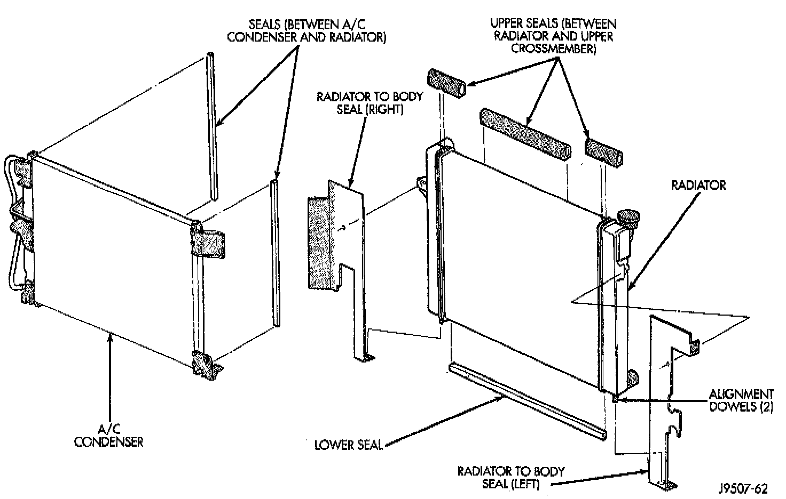
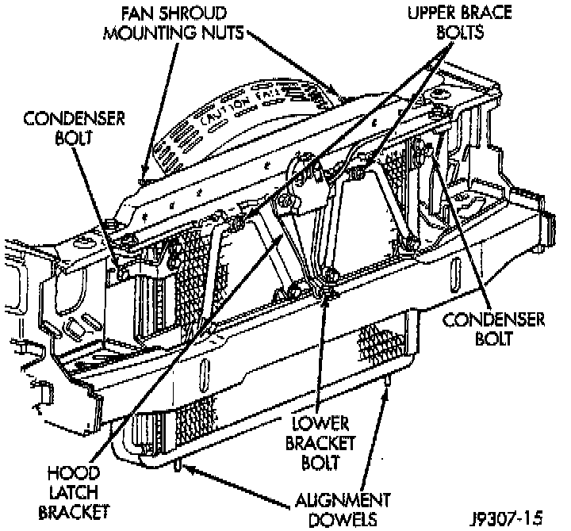
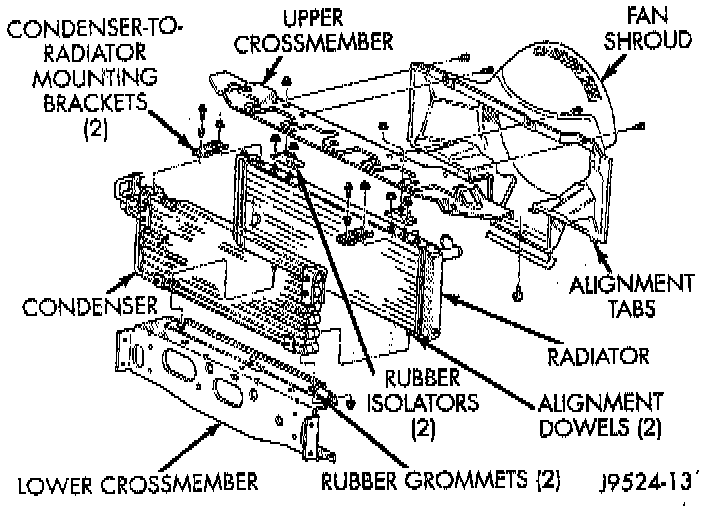

Condenser HVAC: Service and Repair
A/C Condenser:

CAUTION: When removing the condenser note the location of all radiator and condenser air seals. These seals are used to direct air through the condenser and radiator. They must be install In their original locations to prevent overheating.
REMOVAL
1. Disconnect the negative cable from the battery.
2. Recover refrigerant system into a recovery/recycle device.
3. Disconnect the A/C hoses from the condenser and plug the openings.
4. Remove the grille.
Condenser Mounting:

5. Remove the upper brace bolts from the two radiator braces.
6. Remove the two crossmember-to-radiator mounting nuts.
7. Through grille opening, remove bolt securing lower part of hood latch support to lower frame cross-member.
Radiator Upper Crossmember:

8. The radiator upper crossmember can be adjusted left or right through the use of slotted holes. Before removal, mark the original position of the crossmember.
9. Remove the remaining bolts securing the radiator upper crossmember to the body Do not remove the hood latch or hood latch cable from the cross-member. Lift the crossmember straight up and lay to the side.
10. Remove the four lower condenser attaching bolts.
11. Remove the two upper condenser attaching bolts.
12. Carefully remove the condenser from the vehicle.
INSTALLATION
Add 1 ounce of refrigerant oil into the condenser if it is replaced.
1. Carefully position the condenser into the vehicle.
2. Install and tighten the two upper condenser attaching bolts.
3. Install and tighten the four lower condenser attaching bolts.
4. Align the radiator upper crossmember with the scribe marks. Install and tighten the radiator upper crossmember bolts to the body.
5. Install and tighten the radiator upper cross member mounting nuts.
6. Through grill opening, install and tighten bolt securing lower part of hood latch support to lower frame crossmember.
7. Install and tighten the two upper bolts holding the radiator brace to the upper radiator crossmember.
8. Install the grille.
9. Remove the plugs from the openings. Connect the A/C hoses to the condenser.
10. Connect the negative cable to the battery.
11. Evacuate and charge system.